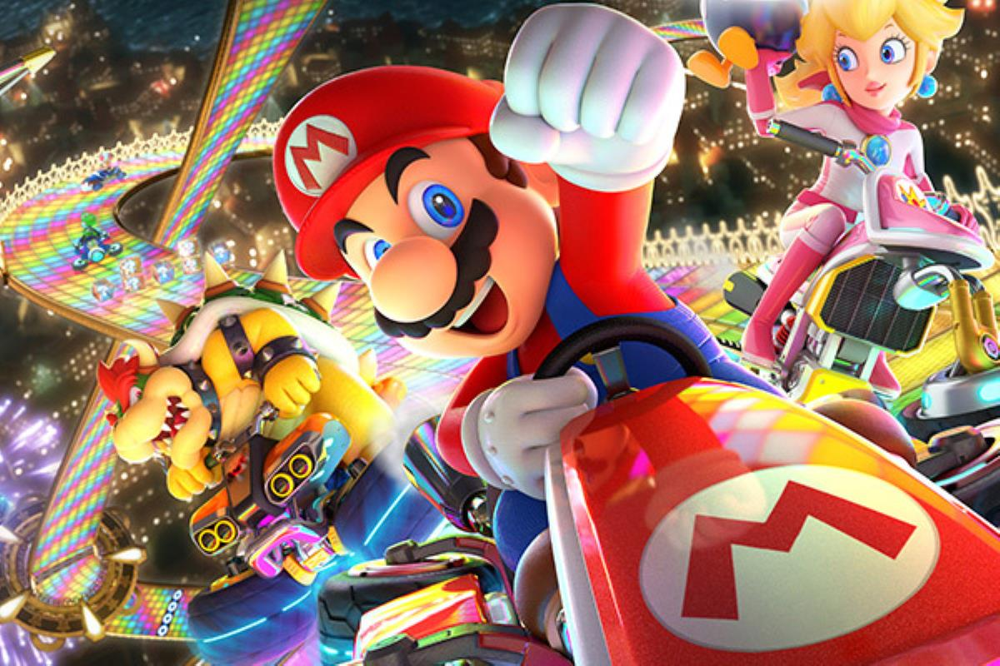
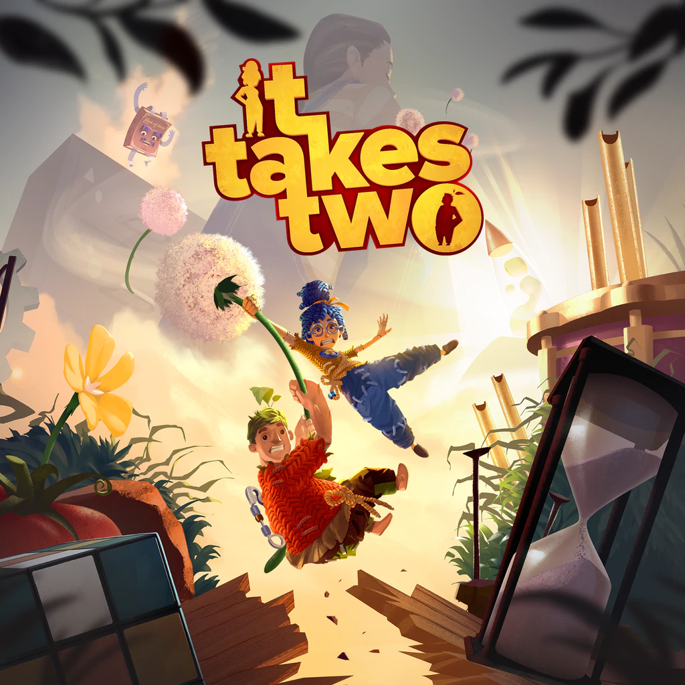

| Maiwenn Lucas | Accueil | ||
|---|---|---|---|
les jeux vidéos sont aussi une de mes passions, ils me permettent egalement de garder un esprit de competition; mais ils permettent aussi de passer des moments en famille et en collaboration et surtout de rigoler.
j'aime beaucoup jouer a "mario kart" ou encore "it takes two" ce sont des jeux compétitifs et en collaboration ainsi on s'amuse bien.

